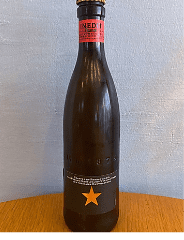
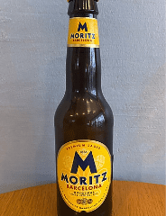
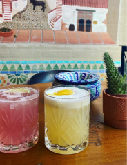
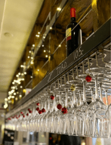

Menu
Vores menu byder på lækre snacks og småretter, perfekt til at dele eller nyde selv. Vi tilbyder også forfriskende cocktails og diverse øl. For dem, der foretrækker noget uden alkohol, har vi også lækre alkoholfrie drikke, som ikke går på kompromis med smagen!
Vores Vin
Vi får hele tiden nye og spændene vine ind ad døren og derfor har vi ikke et fysisk vinkort. Kom ned og oplev vores "vinkort" i baren hvor du kan se alle de vine vi tilbyder. Hver måned udvælger vi dog forskellige vine som vi serverer på glas.
Taster menu
Er I færre end 8 personer, har vi i vores vinbar to taster-menuer, der fungerer som en slags mini-vinsmagning. Her serverer og fortæller vi om det vin I får serveret, og I kommer omkring både bobler, hvidvin og rødvin. Dette kræver ingen forudbestilling.
Taster-menu 3 glas: 185 kr. pr. person.
Taster-menu 5 glas: 315 kr. pr. person.

San Miguel 0,25L
De små nuttede øl vi kender fra España. Vi har den også i en alkoholfri version.
34,00 Kr

Alambra Reserva ”1925” 0,33 L
Baseres på cognac, som destilleres på druer i Cognac-distriktet i Frankrig. Cognac skaber mere dybde i den ellers syrlige og friske cocktail og bidrager med mere karakter og aroma.
44,00 Kr

Inedit 0,33L
Kåret flere gange som verdens bedste øl. Lavet af den tidligere ejer af El Bulli. En let ufiltreret hvedeøl, der indbyder til én mere.
44,00 Kr

A.K. Damm 0,33L
En øl lavet på klassisk Alsace-facon og minder lidt om en weissbier. Let og behagelig i stilen, og er lavet på malt og humle.
44,00 Kr

Moritz 0,33L
Pilsnerøl på 5,4 %. Lavet på Spaniens ældste bryggeri og en stilsikker pilsnerøl, der smager som den skal.
44,00 Kr

San Miguel 0,0%
Som vi kender den, blot uden procenter.
34,00 Kr

Virgin Cocktails
Vælg mellem Rhubarb Love, Sour, Summer Breeze
50,00 Kr

Økologisk saft fra Møn
Hyldeblomst, Rabarber
35,00 Kr

Sodavand
Cola, Cola Zero, Fanta, Danskvand m/u citrus
30,00 Kr